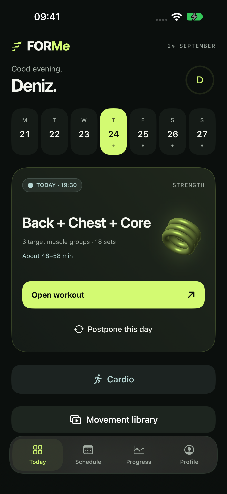
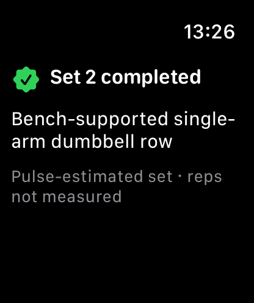
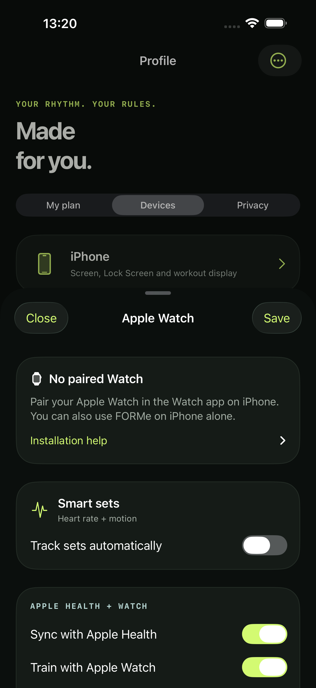

01 / BUILT AROUND YOU
More than a plan.
FORMe Pro builds plans around your goals, experience, days and equipment. Preview the effect of a change before you apply it.
iPhone + Apple Watch
Your goals. Your time. Your equipment. One training experience that brings them together.
Start free · Optional FORMe Pro


FORMe ProFORMe / EXPERIENCE
Planning, training and progress. Connected in one experience.
01 / BUILT AROUND YOU
FORMe Pro builds plans around your goals, experience, days and equipment. Preview the effect of a change before you apply it.
02 / PROGRESS COACH
Completed workouts and your remaining plan are considered together. With Pro, see the reasoning, preview a suitable recommendation and apply it.
03 / APPLE WATCH
Log sets from your wrist. Use automatic set tracking with Pro, and easily correct your records when needed.
143 MOVEMENTS
Explore 143 strength, cardio and stretching movements. Video demonstrations, equipment and difficulty details help you prepare for each exercise.
Free includes videos and guidance for 26 movements. Pro unlocks the full library.
Compare Free and Pro
FORMe / FILM
Real app screens. Adaptive plans, the progress coach and automatic set tracking are Pro features.
Screens show example workout data.
FORMe / FREE & PRO
Start with a workout. Discover Pro when you are ready for more.
Start free
A training experience you can use from day one.
Make it yours
Your plan, your coach and the full library.
Monthly or annual subscription. Current pricing and trial eligibility are shown before purchase. Unless cancelled, the selected paid plan renews automatically after the trial. Manage your subscription in your Apple account.